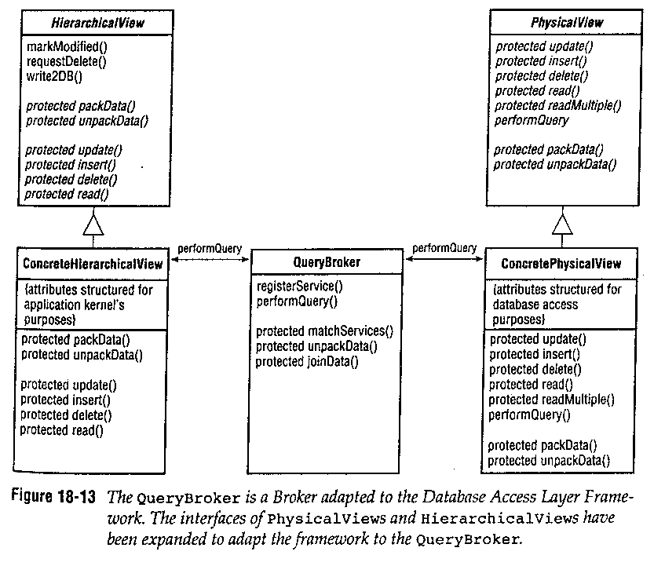
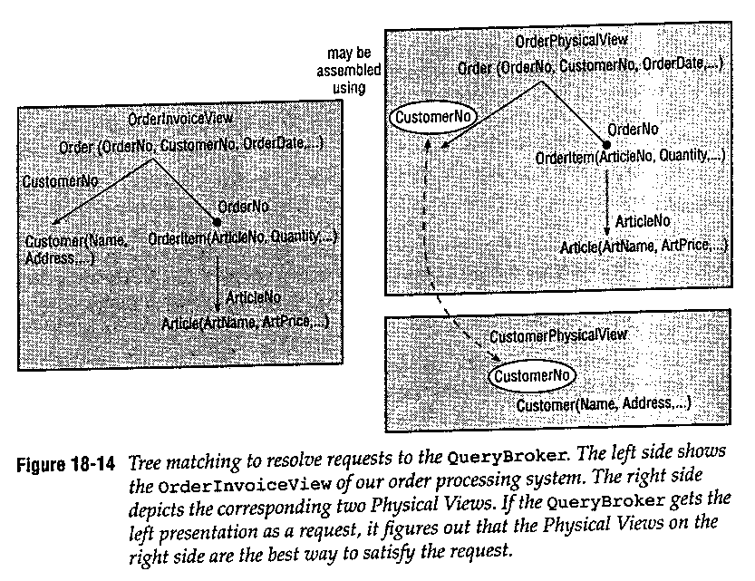
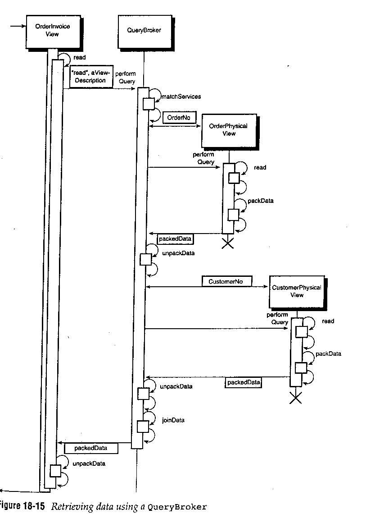

Query Broker Pattern
Környezet
A Relational Database Access Layer használata, a logikai és a fizikai
réteg szétválasztása. A ConcretePhysicalView-k
ConcreteHierarchicalView-k szétválasztása.
Probléma
Hogyan kössük össze a fizikai és logikai réteget, ami alkalmas
olvasásra és írásra is.
Befolyásoló tényezõk
- A költség a flexibilitás ellenében
Két réteg összekapcsolásának legegyszerûbb módja a függvényhívás.
Ez megfelelõ, amíg a két réteg változatlan. Változó rétegek esetén,
nagy méretû programnál ez a módszer nem tartható: egy-egy
módosítással nagy mennyiségû kód terjesztésére van szükség
(MS-Access <-> Java), hiszen annak ellenére, hogy a szétválasztás
az elõbbi mintáknak megfelelõen megtörtént, az újrafordítás általában
szükséges.
- Újrafelhasználhatóság
Ha különbözõ HierarchicalView-k különbözõ módon
érik el ugyanazt a PhysicalView-t, akkor a
PhysicalView újrafelhasználása igazából nem
túl hasznos.
- Komplexitás
Mivel a huzalozott változatt nem eléggé flexibilis, ennél
bonyolultabb módszerre van szükség, ami költségesebb, és
nehezebben kezelhetõ.
Megoldás
Használjunk Broker-t! A HierarchicalView
osztályok képezik a kliens oldalt, a PhysicalView
osztályok a szerver oldalt. Az igényeket aciklikus irányitott gráfok
formájában kell megfogalmazni. Faillesztési algoritmus szükséges
a legjobb egyezés megtalálásához. A QueryBroker
állítja össze a PhysicalView-kat és szállítja
az eredményt egy konténerben. A Broker és
a QueryBroker között lesz egy lényeges eltérés:
a QueryBroker több szervert használ, minden
PhysicalView számára egy szerver.

Példa
Az alábbi ábra a lopikai és a fizikai rétegekhez tartozó
aciklikus gráfok egymáshoz illesztését mutatja be.

Az elõbbi faillesztéshez tartozó lekérdezés folyamata.

Következmények
- Flexibilitás
Logikai és fizikai réteg szétválasztása. A rétegek akár futási
idõben is megváltozhatnak.
- Komplexitás
Bonyolult a faillesztés megvalósítása. Mindez egy jól körülhatárolt,
szeparált modulban zajlik.
- Újrafelhasználhatóság
A QueryBroker független a fizikai és a logikai rétegtõl,
ezét újrafelhasználható. Esetleg keretrendszerbe is építhetõ.
- Költség
Bonyolultsága miatt megvalósítása költséges. Adatszótár használata
még növeli a költségeket.
Implementáció
- Szerver regisztráció
A fizikai réteg osztályainak induláskor regisztrálnia kell magát a
QueryBroker-ben.
- Adattípusok típuskényszerítése
Az adattípusok konvertálása az adatbázis és a programozási
nyelv típusai között valahol megtörténik. Erre megfelelõ
lehet a QueryBroker az adatszótár használatával.
- Faillesztés
A faillesztés algoritmusa a fordítóprogramok kódgenerálási
eljárásához hasonló. Érdemes a már sokat tanulmányozott
eljárást alkalmazni itt is.
- Lekérdezések reprezentációja és eredménytárolók
Megfelelõ reprezentációt kell találni a gráfok leírására,
ami támogatja az illesztési algoritmust is.
Variációk
Az adatbázishívások QueryBroker-be történõ
ágyazásával a ConcretePhysicalView-k megkerülhetõk.
A fejlesztés elõrehaladtával a ConcretePhysicalView
egyenként átvehetik az adatbázishívásokat a QueryBroker-tõl.